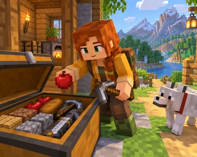

第一晚怎么过 难度 · 入门 约 30 词
A Place for Your Items
箱子能装什么？

这篇讲什么
箱子用来存放物品。
核心词:Chest —— 在画面里找到它,再把单词念出来。
A chest stores your items.
游戏里会用到的一句,读两遍再抄一次。
第一晚怎么过 难度 · 入门 约 30 词
箱子能装什么？

箱子用来存放物品。
核心词:Chest —— 在画面里找到它,再把单词念出来。
A chest stores your items.
游戏里会用到的一句,读两遍再抄一次。